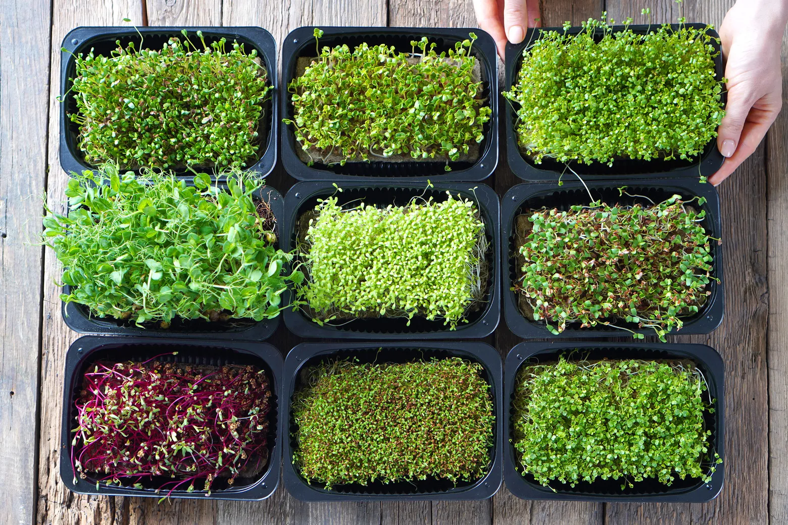

Mikrobilje su mlade biljke koje se beru 7 do 14 dana nakon klijanja - intenzivnog su ukusa i sadrže i do 40 puta više nutrijenata nego zrelo povrće.
Prava su superhrana prepuna vitamina, minerala i antioksidanata, čineći ih savršenim tajnim dodatkom svakodnevnim jelima.
I najbolji deo? Lako se uzgajaju bilo gde. Na terasi, pored prozora, pa čak i na kuhinjskom pultu. Mikrobilje je budućnost održive urbane poljoprivrede.
